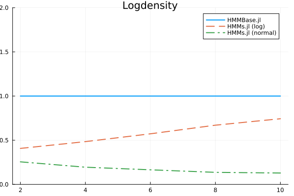
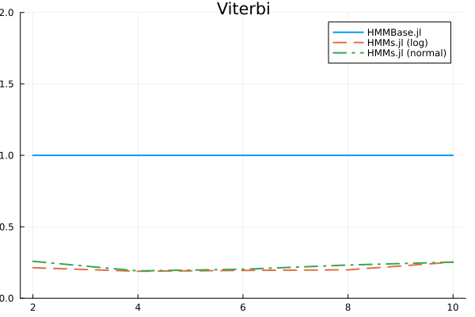
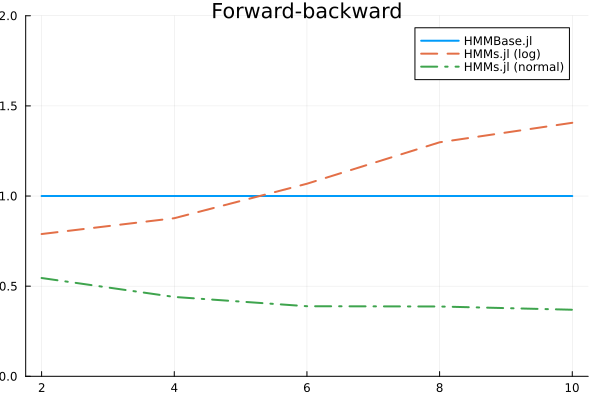
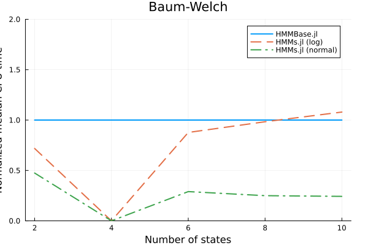

Benchmarks
These benchmarks were generated with the following setup:
julia> using InteractiveUtilsjulia> versioninfo()Julia Version 1.9.1 Commit 147bdf428cd (2023-06-07 08:27 UTC) Platform Info: OS: Linux (x86_64-linux-gnu) CPU: 2 × Intel(R) Xeon(R) CPU E5-2673 v4 @ 2.30GHz WORD_SIZE: 64 LIBM: libopenlibm LLVM: libLLVM-14.0.6 (ORCJIT, broadwell) Threads: 1 on 2 virtual cores Environment: JULIA_PKG_SERVER_REGISTRY_PREFERENCE = eager
The test case was a HMM with one-dimensional Gaussian observations, initialized randomly. Since HiddenMarkovModels.jl and HMMBase.jl give the exact same results, the only thing to compare is their speed of execution.
You can check out the complete benchmarking results in this JSON file created by BenchmarkTools.jl.



